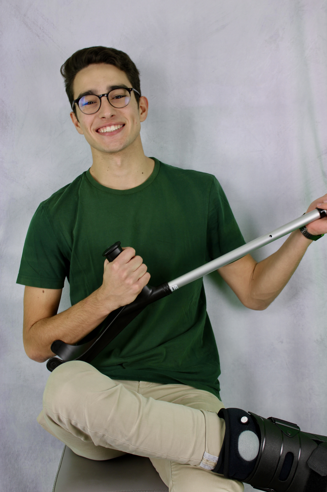
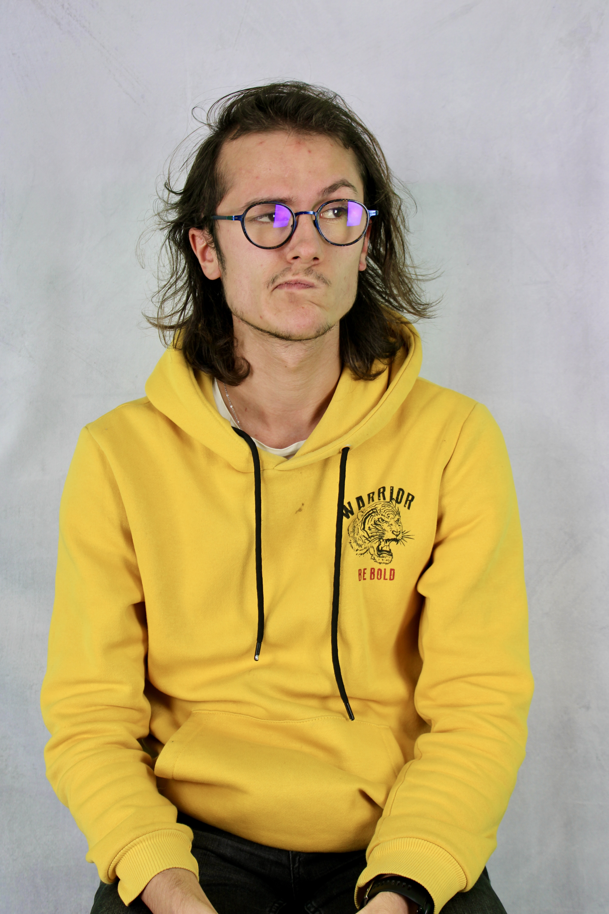
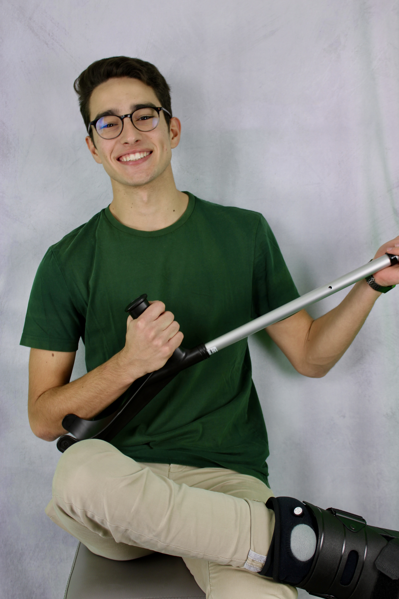
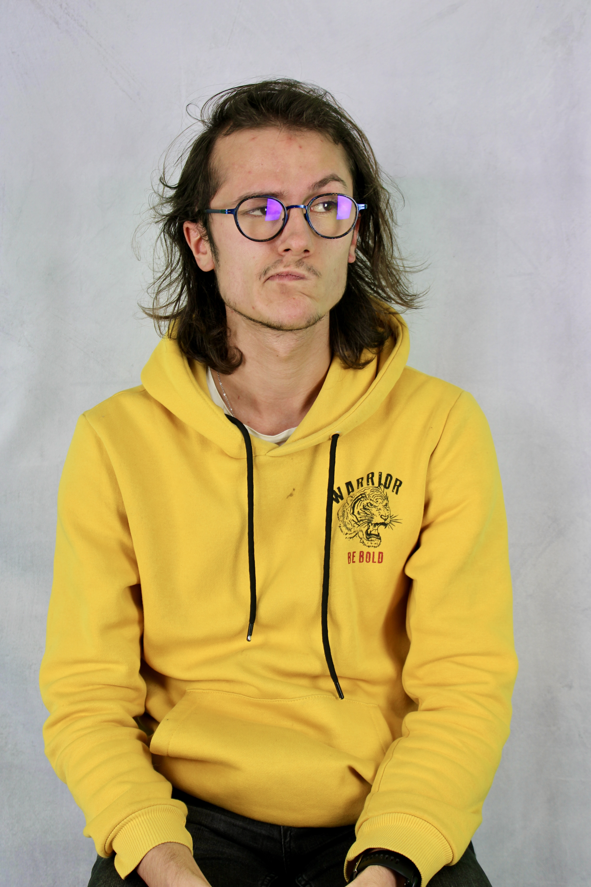

De nos jours, les intelligences artificielles prennent de plus en plus de place dans la société. Mais, pouvons-nous leur faire confiance ? Notre projet s’inscrit dans la continuité d’une étude scientifique menée par le Laboratoire de l’Intégration du Matériau au Système. Cette étude vise à comprendre comment la confiance d’un humain varie en fonction des performances d’une intelligence artificielle. Pour cela, nos clients ont construit une expérience basée sur un jeu collaboratif nommé “Galèrapagos”.
Le client fait appel à nous pour continuer la phase d’expérimentations. En effet, nous allons devoir compléter le panel d’expérimentation afin d’obtenir un nombre satisfaisant de 15 participants. Ainsi, nous devons réaliser de nouvelles expériences sur le modèle de celles déjà réalisées par d’autres chercheurs sur le thème de la confiance entre les hommes et l’intelligence artificielle. Il est donc attendu de notre part de respecter le protocole expérimental mis en place le passé de très près, d’analyser et d’interpréter les nouveaux résultats.
Nous avons pour objectif principal de réaliser à terme un rapport scientifique dans lequel figureront les résultats ainsi que les interprétations des expériences. Nous pourrons considérer notre contrat comme rempli lorsque nous aurons réalisé un rapport exhaustif des expériences, leurs résultats ainsi que les différentes interprétations menant potentiellement à de nouveaux avancements dans l’étude générale de la collaboration entre l’humain et l’Intelligence Artificielle.
Nos tuteurs, Hélène Unrein et Théodore Letouze travaillent dans le domaine de la cognitique et de l’ingénierie humaine au sein du laboratoire IMS.
 



Nous sommes trois étudiants, Adrien Théo et Eudes, de première année de l’ENSC qui sommes motivés par le fait de travailler dans le milieu de la recherche en faisant passer des expériences scientifiques qui utilisaient le jeu Galèrapagos.